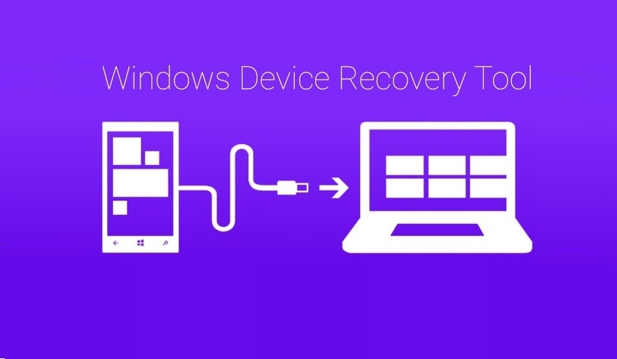

Dicas que lhe auxiliaram na realização de determinados procedimentos
Blu Imei Inválido Resolvido
Prescisou fazer uma reinstalação de firmware em seu dispositivo Blu? Coisa que não é novidade nesses aparelhos não é mesmo? tudo certo após o processo, mas os cartões sims não reconhecendo ...
Resolvido! Touch do Galaxy Y para após Flash
Se você resolveu reinstalar a stock de fábrica do galaxy y duos GT-S6102B e se surpreendeu com o touch screem não funcionando, veja agora como reolver essa bronca com um método bastante fácil.
Como realizar desbloqueio de Bootloader em qualquer moto g, e ou x?
Nada melhor do que poder personalizar seu aparelho moto a seu modo não? mas para isto é nescessário que o desbloqueio do bootloader seja feito pois sem esse desbloqueio não haverá ...

Hard reset em aparelhos Microsoft
Nunca foi tão fácil remover aquele padrão esquecido em aparelhos Lumia ...
Reinstalação de Firmware em aparelhos Microsoft
Se o seu aparelho Microsoft está com soft brink, tela azul ou problemas de memória veja como resolver isso reinstalando sua firmware de fábrica de maneira simplesmente mágica.
Erro Notice no LG optimus L5 E615F Resolvido
Se você esqueceu ou digitou demaciadas vezes o padrão de desbloqueio do seu Lg optimus L5 acabou por bloquea-lo, mas bateu-lhe a feliz idéia de realizar o procedimento de Hard reset para ...